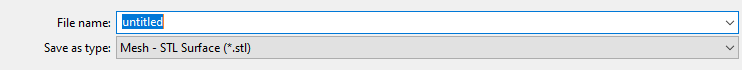

Construct Unstructured Meshes for AdFem
AdFem does not have its own mesh generator. This provides users with flexibility to user a third-party mesh generator. In general, users only need to provide the coordinates (nodes) and connectivity matrix (elems). As mentioned in this page, AdFem does not use static condensation for tackling boundary conditions; therefore, we do not need to specify the boundary conditions for the mesh.
The Mesh function in AdFem can also any any mesh files supported by meshio. In this article, we show an example how to generate a stl data file using Gmsh.
After defining the geometry and generating the mesh in the Gmsh software, we export the mesh in the file menu:

Make sure you save the file as stl format

You can read the file (e.g., example.stl) into AdFem with
mesh = Mesh("example.stl")AdFem also has some built-in mesh data. They are stored in PDATA directory. You can load them directly via
mesh = Mesh(joinpath(PDATA, "twoholes.stl"))